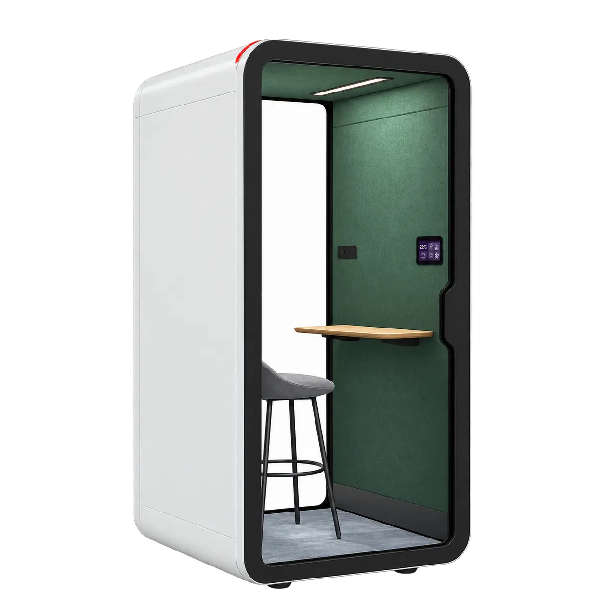

01
CONCENTRAÇÃO · CHAMADAS · 1 PESSOA
Pod
for One
Um espaço individual para chamadas privadas e trabalho que exige concentração, concebido para reduzir as distrações sem sobrecarregar visualmente o escritório.
30 dB
4500K LED
Ventilação
USB & USB-C
Peça informações